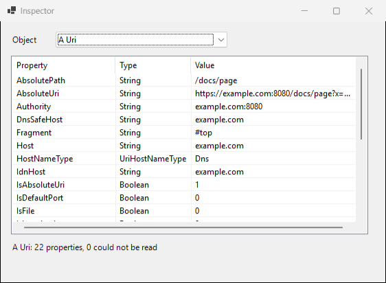

A project: an object inspector
Reflection lets a program look at any object: its type, its properties, their types and their values. This project builds an inspector with a combo box of objects and a list of the properties of the chosen one, and tests it by reading the list.
What you will learn#
GetType()andGetProperties()on any object,- reading a property from an object with
GetValue, - skipping indexers (
GetIndexParameters), - catching properties that cannot be read,
- showing values: a text or a number as it is, an object by its
ToString, - filling a
ListViewand finding a value in it for a test.
The tutorial Exploring .NET with reflection asked a type what it can do. An inspector asks an object what it is.
The program#
# a project: an object inspector - reflection shows the properties of any .NET object, with their types and values, in a list
load "dotnet.ring"
using {
"System"
"System.IO"
"System.Text"
"System.Reflection"
"System.Drawing"
"System.Windows.Forms"
}
# controls and data that the event code uses are global variables
oForm = ""
oChoice = ""
oList = ""
oStatus = ""
aObjects = [] # [ name, the .NET object ]
cTempFile = ""
func main
# Some objects to look at. They are made here; the inspector does not care what they are.
cTempFile = new Path().Combine([ new Path().GetTempPath(), "ringdotnet-inspect.txt" ])
new File().WriteAllText([ :path = cTempFile, :contents = "Hello, inspector" ])
aObjects + [ "A Uri", new Uri("https://example.com:8080/docs/page?x=1#top") ]
aObjects + [ "A DateTime", dnNew("DateTime",[ :year = 2030, :month = 3, :day = 9, :hour = 14, :minute = 5, :second = 7 ]) ]
aObjects + [ "A FileInfo", new FileInfo(cTempFile) ]
aObjects + [ "A StringBuilder", new StringBuilder("Hello") ]
oForm = uiForm("Inspector",560,380)
uiLabel(oForm,"Object",15,18,60,22)
oChoice = uiComboBox(oForm,80,15,250,[ "A Uri","A DateTime","A FileInfo","A StringBuilder" ])
oChoice.setSelectedIndexChangedEvent("inspect(oChoice.SelectedIndex + 1)")
oList = new ListView()
oList.Location = new Point(15,50)
oList.Size = new Size(520,260)
oList.View = "Details"
oList.FullRowSelect = True
oList.GridLines = True
oList.Columns.Add([ :text = "Property", :width = 150 ])
oList.Columns.Add([ :text = "Type", :width = 110 ])
oList.Columns.Add([ :text = "Value", :width = 240 ])
oForm.Controls.Add(oList)
oStatus = uiLabel(oForm,"",15,320,520,22)
oChoice.SelectedIndex = 0
inspect(1) # the first object is shown at the start
uiRun(oForm)
new File().Delete(cTempFile)
# Fill the list with the properties of the object. GetType() gives the Type of any object, and the Type lists its properties; each
# property can read its value from the object: GetValue(object). A property with parameters (an indexer such as Chars[i]) is skipped.
func inspect n
oObject = aObjects[n][2]
oList.Items.Clear()
nShown = 0
nFailed = 0
aRows = []
aProperties = oObject.GetType().GetProperties(NULL).toList()
for oProperty in aProperties
if len(oProperty.GetIndexParameters().toList()) > 0
loop
ok
cValue = ""
try
cValue = showValue(oProperty.GetValue(oObject))
catch
cValue = "(cannot be read)"
nFailed++
done
aRows + [ oProperty.Name, oProperty.PropertyType.Name, cValue ]
next
aSortedRows = sortRows(aRows)
for aRow in aSortedRows
oItem = new ListViewItem().@New([ :text = aRow[1] ])
oItem.SubItems.Add(aRow[2])
oItem.SubItems.Add(aRow[3])
oList.Items.Add(oItem)
nShown++
next
oStatus.Text = aObjects[n][1] + ": " + nShown + " properties, " + nFailed + " could not be read"
# a value for the list: a Ring text or number as it is; an object (a date, another .NET object) by its ToString
func showValue xValue
if isObject(xValue)
return xValue.toString()
ok
return "" + xValue
# the rows sorted by the name of the property (a bubble sort on the first item; the lists are short)
func sortRows aRows
for i = 1 to len(aRows) - 1
for j = 1 to len(aRows) - i
if strcmp(aRows[j][1],aRows[j + 1][1]) > 0
aTemp = aRows[j]
aRows[j] = aRows[j + 1]
aRows[j + 1] = aTemp
ok
next
next
return aRows
This program uses a generic function (dnNew) where a class cannot be used. The lesson The generic functions explains them.
How it works#
Objects of any kind#
The list aObjects has four objects of different classes: a Uri, a DateTime, a FileInfo and a StringBuilder. The inspector does not know which is which. It takes an object, asks GetType() for its type and GetProperties(NULL) for the properties of that type, and for each property oProperty.GetValue(oObject) gives the value that this object has now.
Indexers#
A property with parameters is an indexer: the property Chars of a StringBuilder needs a number (sb[2]). GetIndexParameters() lists the parameters, and a property that has any is skipped, because GetValue(oObject) without an index would raise an error. The test checks that Chars is not in the list.
Errors#
Some properties cannot be read for an object in some states (a file that does not exist has no Length). The read is in try and catch, the row shows (cannot be read), and the status line counts the failed ones. An inspector must not stop at the first property that raises an error.
Values#
showValue writes a Ring text or number as it is and an object by its ToString(). A Uri has properties that are texts (Host, Scheme), numbers (Port) and booleans (IsLoopback, shown as 0 or 1 in Ring). A DateTime has Year, DayOfWeek (a text: Saturday) and Date (another DateTime, shown as text). The type column shows the .NET type of the property, so the list also teaches which type a property has.
The list#
The rows are made as ListViewItem with two sub items and sorted by the name of the property (a small bubble sort with strcmp, as in the tutorial A list with columns). Choosing another object in the combo box runs inspect again, which clears the list and fills it for the new object.
The test#
valueOf("Host") finds the row with that name and returns its value. The test checks values that it knows: the host, the port and the scheme of the address; the year, the day of the week and the hour of the date; the name and the length (16 bytes) of the file that the program wrote; and the length of the text of the builder. It selects each object through the combo box, so the change event is part of the test too.
The checks of this program are in a separate file, selftest/ch13_inspector.ring:
# the checks of ch13_inspector.ring: run with ring ch13_inspector.ring --selftest (the program loads this file and runs selfTest() once its window is shown)
# the value of a property that the list shows, found by the name of the property
func valueOf cName
for i = 0 to oList.Items.Count - 1
if oList.Items.Item(i).Text = cName
return oList.Items.Item(i).SubItems.Item(2).Text
ok
next
return "(not in the list)"
func selfTest
# the Uri
dnAssert("the host",valueOf("Host"),"example.com")
dnAssert("the port",valueOf("Port"),"8080")
dnAssert("the scheme",valueOf("Scheme"),"https")
dnAssert("the fragment",valueOf("Fragment"),"#top")
# a DateTime: choose it in the combo box (the event fills the list again)
oChoice.SelectedIndex = 1
dnAssert("the year",valueOf("Year"),"2030")
dnAssert("the day of the week",valueOf("DayOfWeek"),"Saturday")
dnAssert("the hour",valueOf("Hour"),"14")
# a FileInfo of a real file
oChoice.SelectedIndex = 2
dnAssert("the name",valueOf("Name"),"ringdotnet-inspect.txt")
dnAssert("the length",valueOf("Length"),"16")
dnAssert("it exists",valueOf("Exists"),"1")
# a StringBuilder: the property Chars is an indexer and is not listed
oChoice.SelectedIndex = 3
dnAssert("the length of the text",valueOf("Length"),"5")
dnAssert("an indexer is skipped",valueOf("Chars"),"(not in the list)")This is the idea of the object inspectors of every debugger. A property can have side effects (it may start work), so inspecting a foreign object can change it; the properties of these four objects only read.
What you learned#
GetType(),GetProperties()andGetValue(),- indexers and errors in reflection,
- showing .NET values in a list,
- a test that reads the list.
Exercises#
- Add the fields and the methods of the type in two more lists (or one list with a kind column).
- Add a button that changes the value of a property that can be written (
CanWriteandSetValue). - Inspect a
Formand look for the propertyText; change it and see the window. - Add a text box that filters the properties by a part of the name.